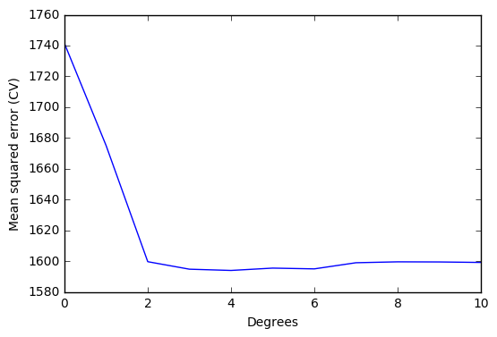
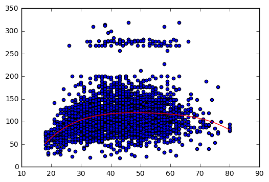

Exercise 7.6
import pandas as pd
import numpy as np
import matplotlib.pyplot as plt
import statsmodels.api as sm
import statsmodels.formula.api as smf
from sklearn.pipeline import Pipeline
from sklearn.linear_model import LinearRegression
from sklearn.preprocessing import PolynomialFeatures
from sklearn import metrics
from sklearn.model_selection import cross_val_score
from sklearn.feature_selection import f_regression
%matplotlib inlinedf = pd.read_csv('../data/Wage.csv', index_col=0)df.head()| year | age | sex | maritl | race | education | region | jobclass | health | health_ins | logwage | wage | |
|---|---|---|---|---|---|---|---|---|---|---|---|---|
| 231655 | 2006 | 18 |
|
|
|
|
|
|
|
|
4.318063 | 75.043154 |
| 86582 | 2004 | 24 |
|
|
|
|
|
|
|
|
4.255273 | 70.476020 |
| 161300 | 2003 | 45 |
|
|
|
|
|
|
|
|
4.875061 | 130.982177 |
| 155159 | 2003 | 43 |
|
|
|
|
|
|
|
|
5.041393 | 154.685293 |
| 11443 | 2005 | 50 |
|
|
|
|
|
|
|
|
4.318063 | 75.043154 |
(a)
# Model variables
y = df['wage'][:,np.newaxis]
X = df['age'][:,np.newaxis]# Compute regression models with different degrees
# Variable 'scores' saves mean squared errors resulting from the different degrees models.
# Cross validation is used
scores = []
for i in range(0,11):
model = Pipeline([('poly', PolynomialFeatures(degree=i)), ('linear', LinearRegression())])
model.fit(X,y)
score = cross_val_score(model, X, y, cv=5, scoring='neg_mean_squared_error')
scores.append(np.mean(score))
scores = np.abs(scores) # Scikit computes negative mean square errors, so we need to turn the values positive.# Plot errors
x_plot = np.arange(0,11)
plt.plot(x_plot, scores)
plt.ylabel('Mean squared error (CV)')
plt.xlabel('Degrees')
plt.xlim(0,10)
plt.show()
# Print array element correspoding to the minimum mean squared error
# Element number = polynomial degree for minimum mean squared error
print(np.where(scores == np.min(scores)))(array([4], dtype=int64),)Optimal degree d for the polynomial according to cross-validation: 4
We will use statsmodels to perform the hypothesis testing using ANOVA. Statsmodels has a built-in function that simplifies our job and we didn’t find an equivalent way of solving the problem with scikit-learn.
# Fit polynomial models to use in statsmodels.
models=[]
for i in range(0,11):
poly = PolynomialFeatures(degree=i)
X_pol = poly.fit_transform(X)
model = smf.GLS(y, X_pol).fit()
models.append(model)# Hypothesis testing using ANOVA
sm.stats.anova_lm(models[0], models[1], models[2], models[3], models[4], models[5], models[6], typ=1)| df_resid | ssr | df_diff | ss_diff | F | Pr(>F) | |
|---|---|---|---|---|---|---|
| 0 | 2999.0 | 5.222086e+06 | 0.0 | NaN | NaN | NaN |
| 1 | 2998.0 | 5.022216e+06 | 1.0 | 199869.664970 | 125.505882 | 1.444930e-28 |
| 2 | 2997.0 | 4.793430e+06 | 1.0 | 228786.010128 | 143.663571 | 2.285169e-32 |
| 3 | 2996.0 | 4.777674e+06 | 1.0 | 15755.693664 | 9.893609 | 1.674794e-03 |
| 4 | 2995.0 | 4.771604e+06 | 1.0 | 6070.152124 | 3.811683 | 5.098933e-02 |
| 5 | 2994.0 | 4.770322e+06 | 1.0 | 1282.563017 | 0.805371 | 3.695646e-01 |
| 6 | 2993.0 | 4.766389e+06 | 1.0 | 3932.257136 | 2.469216 | 1.162015e-01 |
The lower the values of F, the lower the significance of the coefficient. Degrees higher than 4 don’t improve the polynomial regression model significantly. This results is in agreement with cross validation results.
# Save optimal degree
opt_degree = 4# Plot polynomial regression
# Auxiliary variables X_line and y_line are created.
# These variables allow us to draw the polynomial regression.
# np.linspace() is used to create an ordered sequence of numbers. Then we can plot the polynomial regression.
model = Pipeline([('poly', PolynomialFeatures(degree = opt_degree)), ('linear', LinearRegression())])
model.fit(X,y)
X_lin = np.linspace(18,80)[:,np.newaxis]
y_lin = model.predict(X_lin)
plt.scatter(X,y)
plt.plot(X_lin, y_lin,'-r');
(b)
# Compute cross-validated errors of step function
'''
To define the step function, we need to cut the dataset into parts (pd.cut() does the job)
and associate a each part to a dummy variable. For example, if we have two parts (age<50
and age >= 50), we will have one dummy variable that gets value 1 if age<50 and value 0
if age>50.
Once we have the dataset in these conditions, we need to fit a linear regression to it.
The governing model will be defined by: y = b0 + b1 C1 + b2 C2 + ... + bn Cn, where
b stands for the regression coefficient;
C stands for the value of a dummy variable.
Using the same example as above, we have y = b0 + b1 C1, thus ...
'''
scores = []
for i in range(1,10):
age_groups = pd.cut(df['age'], i)
df_dummies = pd.get_dummies(age_groups)
X_cv = df_dummies
y_cv = df['wage']
model.fit(X_cv, y_cv)
score = cross_val_score(model, X_cv, y_cv, cv=5, scoring='neg_mean_squared_error')
scores.append(score)
scores = np.abs(scores) # Scikit computes negative mean square errors, so we need to turn the values positive.# Number of cuts that minimize the error
min_scores = []
for i in range(0,9):
min_score = np.mean(scores[i,:])
min_scores.append(min_score)
print('Number of cuts: %i, error %.3f' % (i+1, min_score))Number of cuts: 1, error 1741.335
Number of cuts: 2, error 1733.925
Number of cuts: 3, error 1687.688
Number of cuts: 4, error 1635.756
Number of cuts: 5, error 1635.556
Number of cuts: 6, error 1627.397
Number of cuts: 7, error 1619.168
Number of cuts: 8, error 1607.926
Number of cuts: 9, error 1616.550The number of cuts that minimize the error is 8.
# Plot
# The following code shows, step by step, how to plot the step function.# Convert ages to groups of age ranges
n_groups = 8
age_groups = pd.cut(df['age'], n_groups)# Dummy variables
# Dummy variables is a way to deal with categorical variables in linear regressions.
# It associates the value 1 to the group to which the variable belongs, and the value 0 to the remaining groups.
# For example, if age == 20, the (18,25] will have the value 1 while the group (25, 32] will have the value 0.
age_dummies = pd.get_dummies(age_groups)# Dataset for step function
# Add wage to the dummy dataset.
df_step = age_dummies.join(df['wage'])
df_step.head() # Just to visualize the dataset with the specified number of cuts| (17.938, 25.75] | (25.75, 33.5] | (33.5, 41.25] | (41.25, 49] | (49, 56.75] | (56.75, 64.5] | (64.5, 72.25] | (72.25, 80] | wage | |
|---|---|---|---|---|---|---|---|---|---|
| 231655 | 1.0 | 0.0 | 0.0 | 0.0 | 0.0 | 0.0 | 0.0 | 0.0 | 75.043154 |
| 86582 | 1.0 | 0.0 | 0.0 | 0.0 | 0.0 | 0.0 | 0.0 | 0.0 | 70.476020 |
| 161300 | 0.0 | 0.0 | 0.0 | 1.0 | 0.0 | 0.0 | 0.0 | 0.0 | 130.982177 |
| 155159 | 0.0 | 0.0 | 0.0 | 1.0 | 0.0 | 0.0 | 0.0 | 0.0 | 154.685293 |
| 11443 | 0.0 | 0.0 | 0.0 | 0.0 | 1.0 | 0.0 | 0.0 | 0.0 | 75.043154 |
# Variables to fit the step function
# X == dummy variables; y == wage.
X_step = df_step.iloc[:,:-1]
y_step = df_step.iloc[:,-1]# Fit step function (statsmodels)
reg = sm.GLM(y_step[:,np.newaxis], X_step).fit()# Auxiliary data to plot the step function
# We need to create a comprehensive set of ordered points to draw the figure.
# These points are based on 'age' values but include also the dummy variables identifiying the group that 'age' belongs.
X_aux = np.linspace(18,80)
groups_aux = pd.cut(X_aux, n_groups)
aux_dummies = pd.get_dummies(groups_aux)# Plot step function
X_step_lin = np.linspace(18,80)
y_lin = reg.predict(aux_dummies)
plt.scatter(X,y)
plt.plot(X_step_lin, y_lin,'-r');References
- http://statsmodels.sourceforge.net/stable/examples/notebooks/generated/glm_formula.html
- http://pandas.pydata.org/pandas-docs/stable/generated/pandas.cut.html